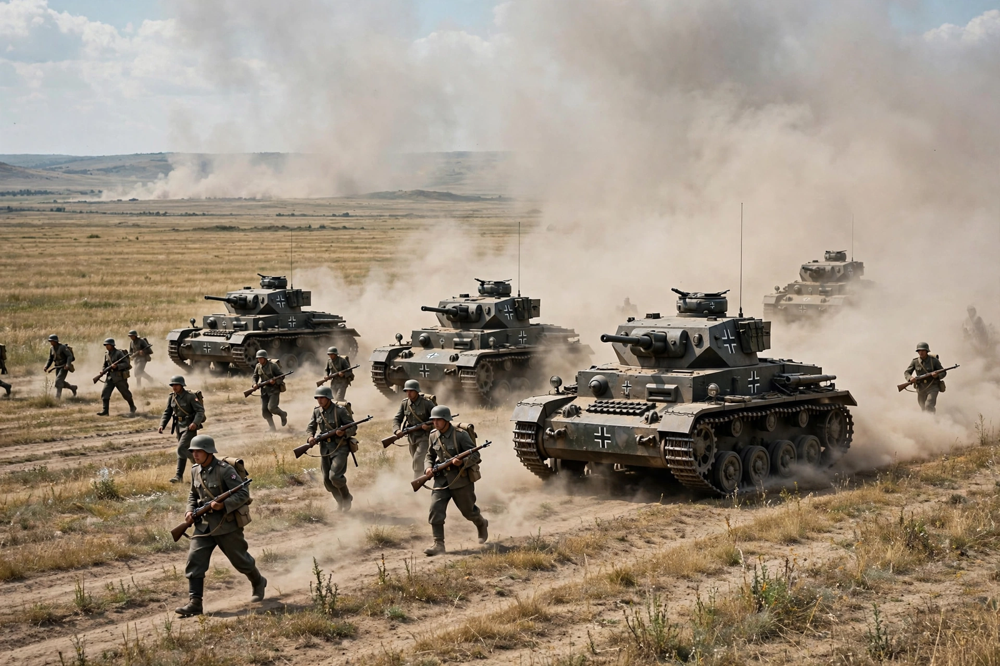

| Date | 22 June – 5 December 1941 |
|---|---|
| Location | Eastern Europe, Soviet Union |
| Attackers | Nazi Germany and Axis allies (c. 3.8 million personnel) |
| Defenders | Soviet Union (Red Army) |
| Result | Axis strategic failure; opening of the Eastern Front |
| Named after | Emperor Frederick Barbarossa |
Operation Barbarossa was the code name for the invasion of the Soviet Union by Nazi Germany and its Axis allies, which began on 22 June 1941. It was the largest military operation in history in terms of manpower, breadth of front and casualties: more than 3.8 million Axis personnel invaded along a 2,900-kilometre front, supported by some 3,350 tanks and 2,770 aircraft. The operation opened the Eastern Front, in which more than 400 million people lived and where the bulk of German military losses in the Second World War would occur.
Hitler's aim, set out in Mein Kampf and in Führer Directive No. 21 (December 1940), was to destroy the Soviet Union, seize its resources, and gain Lebensraum ("living space") for German colonisation, in line with the genocidal Generalplan Ost. German planners expected the Red Army to be destroyed in border battles within weeks. The Molotov–Ribbentrop Pact of 1939 was thereby torn up; Stalin, despite numerous intelligence warnings, refused to authorise full mobilisation, and the Red Army was caught in exposed forward deployments, its officer corps still weakened by the Great Purge.
Three army groups struck simultaneously: Army Group North toward Leningrad, Army Group Centre toward Moscow via Minsk and Smolensk, and Army Group South toward Kyiv and Ukraine. Vast encirclements at Białystok–Minsk, Smolensk and Kyiv (where some 665,000 Soviet troops were captured) destroyed whole Soviet armies, and by autumn the Axis had occupied the Baltic states, Belarus and most of Ukraine and besieged Leningrad. Yet Soviet resistance, logistical overstretch, the autumn mud (rasputitsa) and diversion of forces delayed the drive on Moscow.
Operation Typhoon, the final assault on Moscow, began in October 1941 but ground to a halt in early December amid exhaustion, supply breakdown and temperatures far below freezing, with German advance units within sight of the Kremlin's suburbs. On 5 December 1941 fresh Soviet reserves from Siberia launched a major counteroffensive that drove the Wehrmacht back from Moscow — the first major defeat of the German army in the war. Barbarossa's failure to destroy the USSR quickly condemned Germany to a prolonged war of attrition it could not win, a road that led through Stalingrad to total defeat in 1945.
This article is a recreation from memory for the muse-webcrawl project.